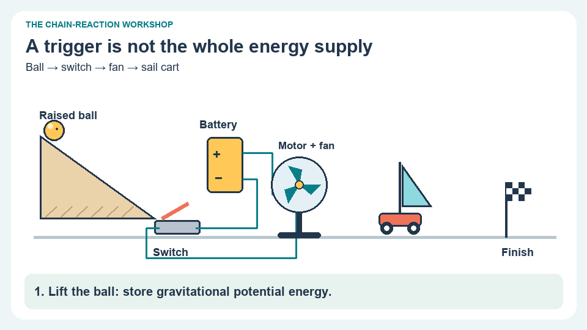

UNIT 4 · LESSON 4 · 10-SECOND CARTOON
Cartoon lab: what powers the next stage?
Watch a ball close a switch, then follow the separate energy supply that powers the fan.

Ready. Motion starts only when you choose Play.
The ball triggers the fan, but the battery supplies the fan’s energy. A chain can release energy stored in more than one place.
Read the sequence without motion
- Lifted ball: gravitational potential energy is stored during setup.
- The ball closes the switch; the switch controls the circuit.
- The battery supplies energy, the motor converts it, and the fan moves air.
- The sail cart crosses the line; sound and motor heating are other outputs.
During one run, the motor-and-fan system receives 20 J electrically. It transfers 6 J in total into sound and thermal energy. If the remaining energy moves air, what is its useful-energy efficiency for moving air?
Your device: identify one trigger, one energy store, and the component that converts or transfers that energy.
Original schematic cartoon. Motion is illustrative, not a physics simulation; all numbers are supplied practice measurements.